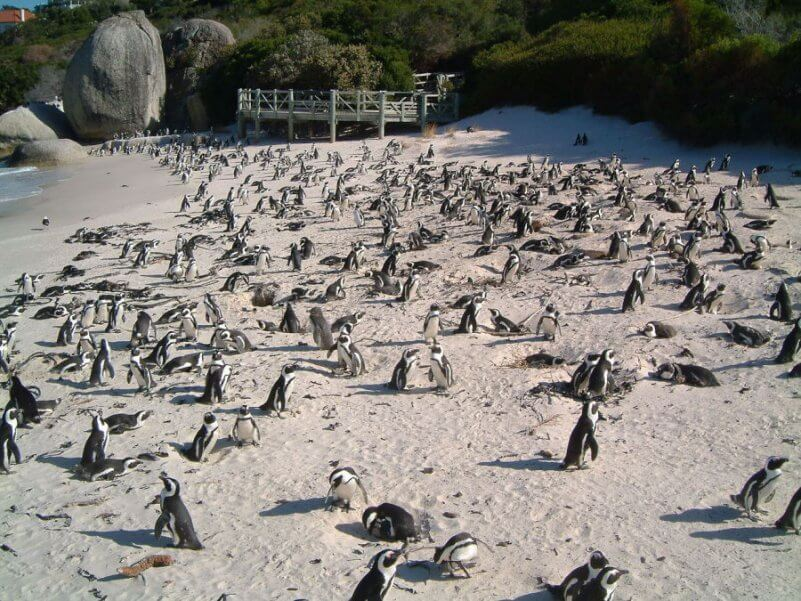
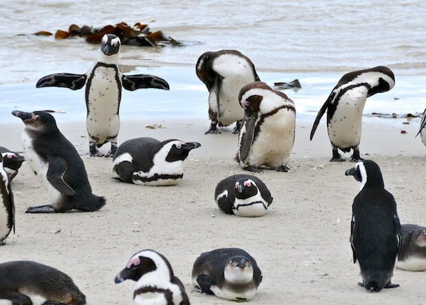
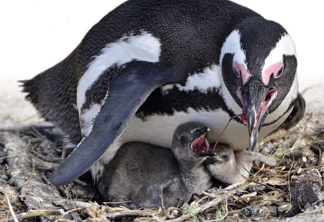
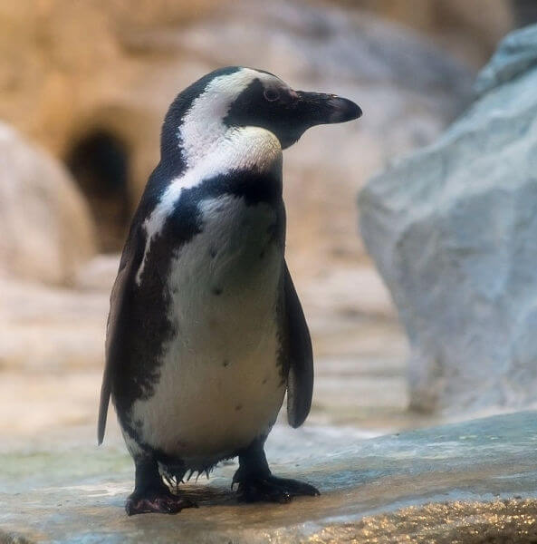

А еще их называют ослиными! Последнее название может вызвать недоумение: какое «родство» у пингвинов с ослами? Но оно есть. Эти птицы издают гортанный крик, очень похожий на крик обиженного осла.
Вопреки распространенному мнению, пингвины обитают не только в прибрежных водах Антарктики: их можно встретить в водах Австралии, Южной Америки и даже самом жарком материке планеты. Очковые, или ослиные, пингвины гнездятся на юго-западном побережье Африки, которое омывается холодными водами Бенгальского течения. Гнездование происходит каждую зиму, когда температура на материке не такая высокая, как летом.
Тем не менее птицам все равно приходится защищать снесенные ими яйца от перегрева. Для этого они выкапывают небольшую нору в гуано (разложившихся остатках помёта птиц и летучих мышей) на побережье, куда и откладывают свои яйца. Примерно через 40 дней из них вылупляются птенцы и вскоре оказываются в «яслях».

Питаются они мальками сардин и сельди. Интересный факт — во время охоты пингвины могут проплыть до 120 км за сутки. Отлично ныряют на глубину свыше 100 метров! При этом хорошо приспособлены для того, чтобы найти там добычу.
Поддерживать необходимую температуру очковым пингвинам помогают специальные органы на голове (розовые отметины чуть выше его глаз). Чем выше температура тела птицы, тем больше крови в них направляется. А благодаря тонкой коже органов кровь в них быстро охлаждается окружающим воздухом.

Для ученых остается загадкой природы, каким образом появились на юге Африки пингвины, если Антарктида от этого континента находится очень далеко. Даже если учесть прекрасные способности к плаванию, все же не верится в то, что черноногим пингвинам удалось преодолеть океанские просторы.
Однако многие миллионы лет назад Антарктида находилась ближе к Африке. Возможно, что именно тогда этот вид пингвинов и смог доплыть до нее. Но тут новая загадка: а почему другие виды пингвинов не последовали за ними?
В 2014 году был подробно исследован геном 48 видов птиц. Оказалось, что относительно близкий вид с пингвинами имеют буревестникообразные птицы. Но пингвины с ними «разошлись» примерно 60 миллионов лет назад.
Ученые выяснили, что треть (34,5 процента) всех случаев охоты была совместной: пингвины уплывали за рыбой, объединившись в небольшие стаи. Несмотря на то, что чаще птицы охотились поодиночке, групповая охота повышала эффективность: работая совместно, пингвины ловили в два раза больше рыбы.
Ошибочно считают, что человек впервые увидел пингвинов с открытием Антарктиды. На самом деле первое упоминание о пингвинах содержится в записках путешественника Васко да Гамы и относится к 1497 году. Именно тогда мореплаватель увидел очковых пингвинов на побережье Южной Африки.

Очковые пингвины — вымирающий вид, занесенный в Международную Красную книгу. По мнению ученых, именно снижение популяции заставляет пингвинов кооперироваться и выбираться на охоту группами: так они могут защититься от возможных хищников. Однако, для построения точных выводов поведение птиц необходимо изучать далее.
ВВЕРХ